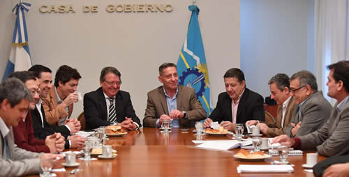

Real Chubut - Agencia de Noticias


Arcioni recibió al subsecretario de Recursos Hídricos de la Nación

Se realizó un relevante encuentro de trabajo del que formaron parte los ministros Cisterna, Pagani y Agulleiro y los equipos técnicos de Provincia y Nación.
El vicegobernador a cargo del Ejecutivo, Mariano Arcioni, este viernes en Sala de Situación de Casa de Gobierno mantuvo un encuentro de trabajo con el subsecretario de Recursos Hídricos de la Nación, Pablo Bereciartua, donde se analizaron diversos proyectos relacionados al agua y al saneamiento, y la ejecución de obras de infraestructura que resguarden el vital recurso.
Fue una extensa reunión de la que también formaron parte los ministros de Coordinación de Gabinete, Víctor Cisterna; de Infraestructura, Alejandro Pagani; de Ambiente, Ignacio Agulleiro, el titular del Instituto Provincial del Agua, Gerardo Bulacios; el presidente de Corfo, Martín Bortagaray, y los integrantes de los equipos técnicos de Provincia y Nación.
Durante el encuentro, los funcionarios analizaron la difícil situación que atraviesa la Provincia con respecto al recurso hídrico, y se presentaron diferentes proyectos que son impulsados desde el Gobierno Nacional, principalmente en lo referido al saneamiento y obras de infraestructura vinculadas al cuidado del agua.
Se acordó llevar a cabo un trabajo articulado, fundamentalmente a través del Gabinete del Agua provincial, que fue conformado por decisión del gobernador Mario Das Neves.
TRABAJO CONJUNTO
Respecto de la reunión, el ministro Pagani manifestó que "este encuentro es parte de un trabajo que venimos realizando en conjunto con la Subsecretaría de Recursos Hídricos de la Nación con la que se estableció una agenda de trabajo para consolidar lo que ya se ha presentado en su momento en este ámbito, y de esta manera seguir avanzando en algunos temas que nosotros consideramos importantes para la Provincia, como es el caso del agua, el saneamiento, los desagües pluviales, las protecciones de distintas ciudades y el desarrollo de áreas bajo riego".
Además detalló que "también se dialogó sobre distintas obras de infraestructura que deben acompañar todo este trabajo, las cuales se deben concretar en el corto y mediano plazo que vendrán a resolver problemas, pero también buscamos que sean dinamizadoras de desarrollos que tienen que ver con lo productivo, lo económico y con otras cuestiones regionales".
"Las obras que planteamos son las que se vienen hablando hace 6 meses, pero la que más se destaca, porque para nosotros es central, es la regulación del Lago Fontana, de la cual estamos muy encima con el Gabinete del Agua, a cargo de Gerardo Bulacios, y a la cual le queremos dar alternativas de solución lo más rápido posible", enfatizó Pagani.
AGENDA ESTRATÉGICA
El subsecretario de Recursos Hídricos de la Nación, Pablo Bereciartua, explicó que "esta reunión fue muy útil para interiorizarme sobre cuáles son las características y la necesidad real de los proyectos que estamos trabajando".
Asimismo resaltó que "la primera conclusión que se puede sacar de este encuentro es que Chubut enfrenta un desafío importante, vinculado al cambio climático, por eso se ha elaborado una agenda estratégica relacionada a la realidad productiva en abastecimiento de agua y las posibilidades concretas del desarrollo del sector privado".
"Este trabajo está enmarcado dentro del Plan Nacional del Agua, que busca fomentar la inversión tanto pública como privada, en infraestructura, desarrollar el empleo y sobre todo generar cambios en la capacidad de desarrollo del territorio que es lo que se logra con este tipo de obras, concretándolo en conjunto con las provincias de acá al 2019", finalizó el subsecretario.
PUBLICIDAD